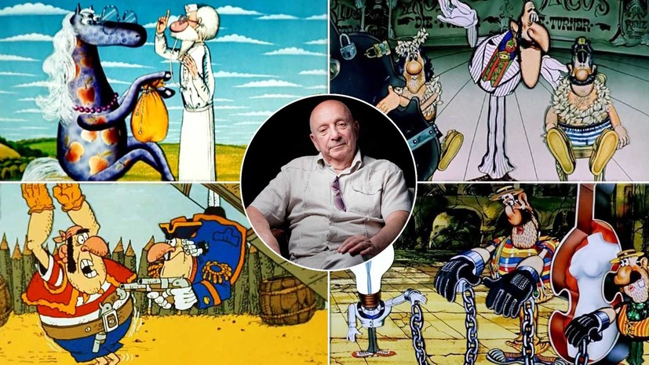

Notable Ukrainian animator, director and screenwriter

The creator of the cartoons "Columbus Docks" (1967), "Wizard Oh" (1971), "Wings" (1983) and others, animated series "The Adventures of Captain Vrungel" (1976-1979),
"Doctor Aibolyt" (1984-1985), "Treasure Island" (1986-1988) and "Return to Treasure Island"(1992)